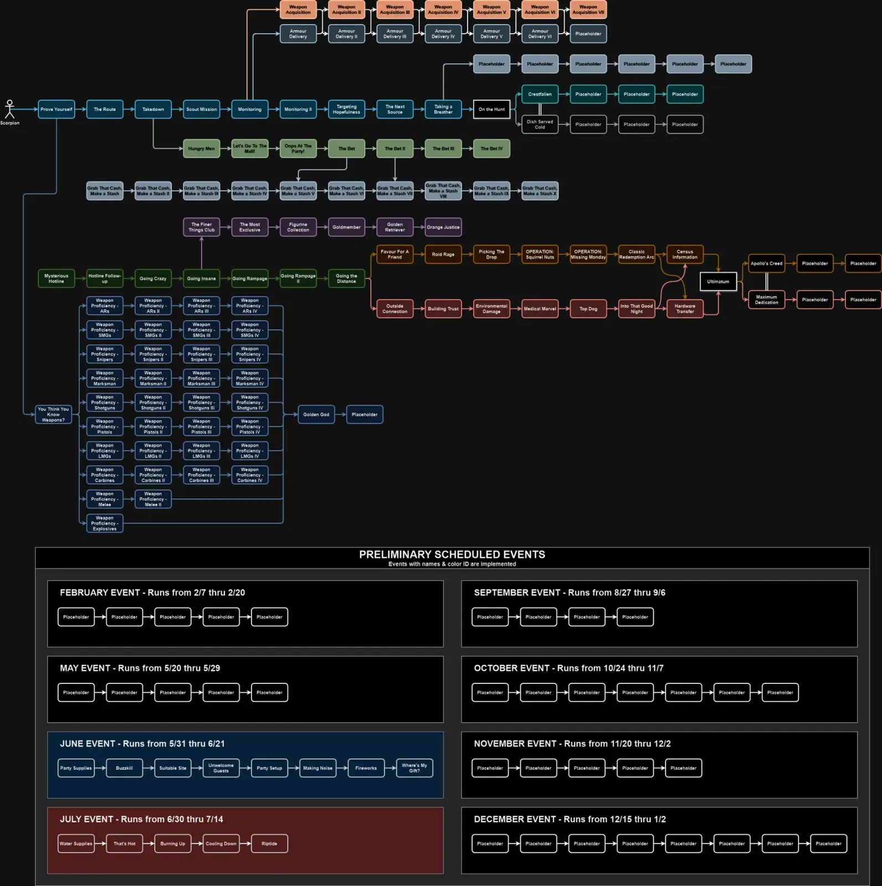

Scorpion
- Downloads
- 120,816
- Favourites
- 86
- Mod lists
- 215
- Download and Install CommonLib FIRST THIS IS REQUIRED
- Download Scorpion
- Open the downloaded 7z file in 7-zip
- Select the user folder in the 7z file in 7-zip
- Drag the user folder from 7-zip into your SPT folder
Demonstration Video (yoink):

Quest Guide (May not be current)
https://acidphantasm.github.io/scorpion-guide/quests/1-15.html
Quest Map

Special thanks to DrakiaXYZ, their source code gives great inspiration and their mods are top tier.
If you enjoy my work - you can buy me a coffee~
Version
1.0.0
This version will only work for SPT 4.0.3+
Probably works, I’m over trader mods tbh
Dependencies
Version
0.13.1
This version will only work for SPT 3.11.x
New Features
- Added secret things
Bugs Squashed
- Fixed Randomization logic to refresh flea properly
Version
0.13.0
This version will only work for SPT 3.11.x
3.11 Update
Changes
- Added new weapons
- Updated properties on quests even though they aren’t used
Version
0.12.3
This version will only work for SPT 3.10.x
Changes
- Forced loading Scorpion before LiveFleaPrices because people keep changing load order and breaking it
- Adjusted default price multiplier to 1.25
Version
0.12.2
This version will only work for SPT 3.10.x
Bugs Squashed
- ACTUALLY fixed stock/buy limit randomization due to 3.10.2 changes to RandomUtil
- I hate math
Version
0.12.1
This version will only work for SPT 3.10.x
Bugs Squashed
- Fixed stock/buy limit randomization due to 3.10.2 changes to RandomUtil
- Added PR-Taran police baton to Melee Proficiency quests
Version
0.12.0
This version will only work for SPT 3.10.x
3.10 Update
REQUIRES 3.10 VERSION OF VCQL
- Added M60 variants to LMG Proficiency
- Added UZI variants to SMG Proficiency
- Added SR-3M to Carbine Proficiency
- Added Gladius to Melee Proficiency
- Updated Factory Zone positions
- Updated Production unlock format for 3.10
Version
0.11.4
This version will only work for SPT 3.9.x
New Features
- Added full locales for FR
Bugs Squashed
- Added G36 to AR Proficiency
- Added Kukri to Melee Proficiency
- Fixed Modded Weapon Compatibility
Version
0.11.3
This version will only work for SPT 3.9.x
New Features
- Added full locales for KR, and RU
Bugs Squashed
- Fix Armour Delivery V quest location to not be inside exfil zone (Thanks Big Silly Goose)
Version
0.11.2
This version will only work for SPT 3.9.x
Bugs Squashed
- Router is now async
- Fix Factory Zones for Monitoring (Thanks Big Silly Goose for making the exit zones huge)
Scorpion is in bug fixing mode to prepare for full release
Version
0.11.1
This version will only work for SPT 3.9.x
Bugs Squashed
- Allow quest completion on Sandbox_high (no change if you are below level 20)
Version
0.11.0
This version will only work for SPT 3.9.x
Update to 3.9.0
REQUIRES VCQL 2.0.2
New Features
- Added configuration option to make all event quests active year round
- Added full locales for CN, TW (TW will work when supported by SPT)
- Added partial locales for PL, RU, ES, PL
Changes
- Converted ALL IDs to MongoIDs (2k IDs oof)
- Added sawed-off double barrel to shotgun proficiency quests
- Added event dates to event descriptions
Bugs Squashed
- Fix Shturman Spelling Mistake
- Fix locales for Weapon Acquisition V & VI
Version
0.10.0
This version will only work for SPT 3.8.X
REMINDER: Stash Row Quests WILL NOT WORK on 3.8.0
New Features
- Ability to add custom modded weapons to the weapon proficiency questline via json
- Forced Scorpion to load AFTER VCQL to support this feature
- Display Random silly load message on server start
New Quests
- Golden Retriever
- Orange Justice
- Event Questline!
- This event questline runs from 6/30 to 7/14. There are no requirements to start this line.
- EVENT: Water Supplies
- EVENT: That’s Hot
- EVENT: Burning Up
- EVENT: Cooling Down
- EVENT: Riptide
Balancing
- Updated Weapon Case barter to require 4x ledx & 2x vpx
- Updated T H I C C Weapon Case price to 9.5m
- Updated T H I C C Item Case price to 25.6m
- Added Experience & TraderRep rewards to “Finer Things” questline
- Moved Kappa Container from “Finer Things” questline to “Golden God” in weapon proficiency questline
Bugs Squashed
- Fix “Ultimatum” locale
- Fix “Armour Delivery” locales to indicate durability requirements
- Fix “EVENT: Making Noise” to end properly
- Fix “EVENT: Where’s My Gift?” to end properly
- Minor Locale fixes
Version
0.9.0
This version will only work for SPT 3.8.X
REMINDER: Stash Row Quests WILL NOT WORK on 3.8.0
New Quests
- Finer Things Club
- The Most Exclusive
- Figurine Collection
- Goldmember
- Ultimatum
- Apollo’s Creed
- Maximum Dedication
Changes
- Added 9x19 RIP (LL4)
- Added 9x19 PST (LL1)
Bugs Squashed
- Fix “EVENT: Party Supplies” to not require FIR
- Fix “Golden God” pre-requisite quest to “Weapon Proficiency - Melee II” instead of I
- Minor Locale fixes
Version
0.8.1
This version will only work for SPT 3.8.X
**Config file is now .jsonc instead of .json
YOU WILL NEED TO RE-CONFIGURE THE MOD IN THE NEW JSONC FILE, DELETE THE OLD ONE**
REMINDER: Stash Row Quests WILL NOT WORK on 3.8.0
Sorry for quick back to back updates.
Changes
- Moved EVENT quests to the top of the JSON so they show at the top of trader list
Bugs Squashed
- Fixed “EVENT: Where’s My Gift?” from triggering way too early
Version
0.8.0
This version will only work for SPT 3.8.X
Config file is now .jsonc instead of .json
YOU WILL NEED TO RE-CONFIGURE THE MOD IN THE NEW JSONC FILE, DELETE THE OLD ONE
REMINDER: Stash Row Quests WILL NOT WORK on 3.8.0
New Quests
- Weapon Proficiency - Melee II
- Event Questline!
-
This event questline runs from 5/31 to 6/21. There are no requirements to start this line.
-
EVENT: Party Supplies
-
EVENT: Buzzkill
-
EVENT: Suitable Site
-
EVENT: Unwelcome Guests
-
EVENT: Party Setup
-
EVENT: Making Noise
-
EVENT: Fireworks
-
EVENT: Where’s My Gift?
-
New Features
- Added “unlimitedStock” configuration option
- Added “unlimitedBuyRestriction” configuration option
- Added “removeLoyaltyRestriction” configuration option
- Added “Weapon Acquisition” requirements to also be in the message text on start
Changes
- Adjusted various end game ammo prices to be better
- Added Korund L6 front & back plates to LL4
- Added widely used L6 front & back plates to LL4
- Added Kirasa armour to LL1
- Changed how JSON files are loaded in code
Bugs Squashed
- Added revolvers to “Weapon Proficiency - Pistols” questline
Version
0.7.1
This version will only work for SPT 3.8.X
REMINDER: Stash Row Quests WILL NOT WORK on 3.8.0
New Quests
- Weapon Acquisition VI
- Weapon Acquisition VII
- Top Dog
- Into That Good Night
- Hardware Transfer
- Census Information
- Golden God
Changes
- Adjusted “Weapon Acquisition” & “Armour Delivery” lines to happen every 5 levels instead of 10
- Adjusted Experience rewards for “Weapon Acquisition” & “Armour Delivery” lines (to fit new level reqs)
- Moved BTC reward from “Weapon Acquisition V” to “Weapon Acquisition VII”
Bugs Squashed
- Fixed SR-25 assort unlock image to show all of the attachments
- Hotfix to allow Realism enjoyers to complete “Weapon Acquisition” (yay for QuestName fields that don’t show for users)
Version
0.7.0
This version will only work with SPT 3.8.0+
REMINDER: Stash Row Quests WILL NOT WORK on 3.8.0
You will not be able to complete the new quests if you use Realism until it is updated to allow WeaponAssembly quests that aren’t called “Gunsmith”
New Quests
- Weapon Acquisition
- Weapon Acquisition II
- Weapon Acquisition III
- Weapon Acquisition IV
- Weapon Acquisition V
- Armour Delivery
- Armour Delivery II
- Armour Delivery III
- Armour Delivery IV
- Armour Delivery V
- Armour Delivery VI
Changes
- “Melee Proficiency” only requires 10 kills now. Complainers.
Bugs Squashed:
- Enlarge quest zone for “Let’s Go To The Mall!”
- Enlarge quest zone for “Scout Mission”
- Allow all GLs to work for “Weapon Proficiency - Explosives”
- Enable Realism Detection logging only if config options are enabled
Version
0.6.1
This version will only work with SPT 3.8.0+
REMINDER: Stash Row Quests WILL NOT WORK on 3.8.0
No New Quests
New Features
- Add ability for Scorpion to repair only weapons
- You pay much more but he repairs better than vanilla traders
Balancing
- Adjust “buy_price_coef” (seriously, last time maybe)
- Adjust price for Morphine & Adrenaline
- Scorpion will now only buy the following: Food, Drink, Backpacks, Rigs, Armour, Meds, Grenade, Ammo, Weapons, & Weapon Mods
- He is the best price for weapons at Loyalty Level 4
- Adjust Standing requirements for LL3 & LL4
Bugs Squashed
- Fix locales for “Favour For a Friend” to indicate FIR
- Fix locales for “OPERATION: Missing Monday” to indicate FIR
- Fix “items_buy_prohibited” from being blank to prevent mod conflict
- Add prerequisite check for VCQL & VCQL Zones
- Add loadBefore for VCQL to ensure trader enum imported before VCQL imports quests
- Add conflict check for all version of HeliCrash mod (latest Arys release seems to work, will throw warning)
- General code cleanup to optimize load time
Version
0.6.0
This version will only work with SPT 3.8.0+
REMINDER: Stash Row Quests WILL NOT WORK on 3.8.0
No New Quests
Bugs Squashed:
- Fix M4A1 not tracking for Weapon Proficiency AR Quests
- Fix Pre-Requisites for all Weapon Proficiency IV Quests (They all unlocked upon completing AR III)
- Remove stray M856A1 round in Assort ADAR
- Clarify Locales for not dying during “The Bet III”
Balancing:
- Price Balancing Pass (Need Feedback)
- Experience Balancing Pass (Need Feedback)
New Assort:
-
LL2
-
AR-15 ERGO F93 Stock
-
AR-15 Magpul UBR GEN2 stock (FDE)
-
AR-10 KAC QDC 7.62x51 Flash Suppressor Kit
-
KAC PRS/QDC 7.62x51 sound suppressor
-
-
LL3
-
Valday PS-320 1/6x scope
-
Fortis Shift tactical foregrip
-
Wilcox BOSS Xe reflex sight
-
AR-15 B5 Systems Precision stock
-
Thunder Beast Arms Ultra 5 sound suppressor
-
Daniel Defense WAVE QD sound suppressor
-
AR-15 Daniel Defense WAVE 5.56x45 muzzle brake
-
AR-10 Daniel Defense WAVE 7.62x51 muzzle brake
-
CALOK
-
Aluminum splint
-
Version
0.5.3
This version will only work with SPT 3.8.0+
REMINDER: Stash Row Quests WILL NOT WORK on 3.8.0
Added 16 new quests
Added items to assort LL3-4
Added “The Bet” as a pre-req for 5th Stash Line Quest
Added “The Bet II” as a pre-req for 7th Stash Line Quest
Bugs Squashed:
- More Quest Types Fixed
- Fixed multiple quest location tags
- Fixed incompatibility from 0.5.2 with Questing Bots…woops.
- Fixed bodypart enum log entries…woops again.
New Quests:
- Picking the Drop
- OPERATION: Squirrel Nuts
- OPERATION: Missing Monday
- Classic Redemption Arc
- Outside Connection
- Building Trust
- Environmental Damage
- Medical Marvel
- Weapon Proficiency - ARs IV
- Weapon Proficiency - SMGs IV
- Weapon Proficiency - Snipers IV
- Weapon Proficiency - Marksman IV
- Weapon Proficiency - Shotguns IV
- Weapon Proficiency - Pistols IV
- Weapon Proficiency - LMGs IV
- Weapon Proficiency - Carbines IV
New Assort:
- Peltor Comtac 4 (Quest Unlock - LL3)
- Armasight N-15 NVG (Quest Unlock - LL3)
- FAST MT Super High Cut Helmet (Quest Unlock - LL3)
- FAST MT Face Shield Quest Unlock - LL3)
- 5.56x45mm M995 (Quest Unlock - LL4)
- 4.6x30mm AP SX (Quest Unlock - LL4)
- 7.62x51mm M993 (Quest Unlock - LL4)
- 7.62.39mm MAI AP (Quest Unlock - LL4)
- 23x75mm Zvezda flashbang (Quest Unlock - LL4)
- 9x19mm PBP (Quest Unlock - LL4)
- 7.62x54mm R BS (Quest Unlock - LL4)
- 5.45x39mm PPBS (Quest Unlock - LL4)
Version
0.5.1
This version will only work with SPT 3.8.0+
Update for 3.8.2 compatibility
Releases moving forward will target any 3.8.x release (until 3.9.0)
Stash Expansion quest line only works on 3.8.1 or higher
Version
0.5.0
This version will only work with SPT 3.8.1+
Added 4 quests
- The Bet III
- The Bet IV
- Favour For a Friend (Start of new questline)
- Roid Rage
Fix spelling mistake on “Targeting Hopefulness”
Fix “The Bet” not tracking progress on Lighthouse or Ground Zero ( Thanks Greatdane!)
Fix “The Bet II” fail conditions not triggering on Ground Zero
Fix QuestID for “On the Hunt”, “Dish Served Cold”, “Crestfallen” to prevent SPT quest logic from granting access too early ( Thanks frugyman!)
- Your quests should automatically fix themselves if you were granted “Dish Served Cold” and “Crestfallen” too early and they automatically failed
Fix multiple Quest Types (the little images next to quests)
You can no longer sell Backpacks/Armoured Rigs/Armour to Scorpion
Your item prices when selling to Scorpion has been adjusted slightly lower (this should be final now)
Moved Razor scope to Quest Unlock instead of straight loyalty level
Version
0.4.2
This version will only work with SPT 3.8.1+
Added 3 new quests
Added items to assort LL1-4
Added hardcore config options (randomized max buy count, randomized out of stock chance, randomized availability)
Added realism detection
Bugs Squashed:
- Various Quest Types Fixed
- Various AssortmentUnlocks adjusted (should all work?)
- Targeting Hopefulness should be working properly now
- Added Factory Key Start Reward to Monitoring
- Added Factory Key Assortment Unlock to Monitoring
New Quests:
- Taking a Breather
- On the Hunt
- Dish Served Cold / Crestfallen (branching finishing quest)
New Assort:
- MULE
- ETG
- .50 BMG
- 9x18 BZHT
- 9x21 7u4
- .366 EKO
- 5.7x28mm L191
- 5.56x45mm SOST
- 12.7x55mm PS12
- 7.62x39mm PS
- .388 Lapua TAC-X
- iFAK
- Labs Keycard
- MP5 50-round magazine
- MP7 40-round magazine
- Beta Backpack
- MBSS Backpack
- Scav Backpack
- Elcan Spectre 1x-4x (black)
- EOTech XPS3
- EOTech XPS2
- RK-2 Foregrip
- RK-5 Foregrip
- STARK SE-5 Foregrip
- Razor scope (gg)
- NightForce 30mm Scope Mount
- GPNVG
- FLIR
- RGO Hand Grenade
Version
0.4.1
This version will only work with SPT 3.8.1
- Add 5 more quests for stash rewards & adjusted costs
- Add 3rd Ambulance to The Route & Fix Zone Size (Thanks MizuViper)
- Adjust buy price coefficient to prevent Scorpion from being best trader to sell to
- Change 7.62 PS quest unlock reward to FMJ
- Change M80 quest unlock reward to TCW
- Add M80 unlock to “The Next Source”
Version
0.4.0
This version will only work with SPT 3.8.1
- 32 New Quests (including 5 that reward Stash Rows!)
- Fix “Hotline Follow-up” reward missing plates/soft armour
- Added better rewards for “The Bet” & “The Bet II” for the masochists out there
- “Do Not Kill Tagilla” requirement is now visible on “Going Rampage” & “Going Rampage II”
Version
0.3.2
This version will only work with SPT 3.8.0 - 3.8.1
- Fixed ‘Going Rampage’ & ‘Going Rampage II’ Failure Conditions…
- So you can actually restart it.. Thanks Greatdane!
- Actually updated version number in package.json cause I’m dumb
Version
0.3.1
This version will only work with SPT 3.8.0 - 3.8.1
Minor Feature Release - New Config option
- priceMultiplier
Version
0.3.0
This version will only work with SPT 3.8.0 - 3.8.1
Added 5 Quests
- The Next Source
- Let’s Go To The Mall!
- Oops At The Party!
- The Bet
- The Bet II
Version
0.2.2
This version will only work with SPT 3.8.0 - 3.8.1
Update to this if you are getting the “Factory cellars key” icon on Hotline Follow-up
- Actually fixed quest reward for “Hotline Follow up”
Version
0.2.1
This version will only work with SPT 3.8.0 - 3.8.1
- Hopefully fixed an issue that caused someone to not trigger ‘Hotline Follow-up’ properly
- Hopefully fixed an issue someone reported that caused a profile problem
- Renamed one quest to fit other naming convention for quests that go (first q -> II -> III)
Version
0.2.0
This version will only work with SPT 3.8.0 - 3.8.1
Added config value validation
Added config option
- “addTraderToFlea” default is true
Added a bunch to assort
- Kit SKS
- Kit VPO
- Kit SAG
- Kit AK-102 (LL2)
- SKS Rear Sight (AI Doesn’t spawn with one like 99% of the time)
- F1 grenade
- Magpul AFG Foregrip
- RK-0 Foregrip
- NCStar Blue Laser (best laser)
- Steiner DBAL
- SilencoCo Hybrid 46 & Adapter (LL2)
- HAMR Sight (LL2)
- Deltapoint
- Low-pro gas block for ADAR (The only reason I don’t use ADAR pre-15 is traders don’t carry one)
- .45 Match FMJ
- Propital
- Morphine
- Adrenaline
- MP7 30rnd mag
- G36 30rnd mag
- AK-101 30rnd mag
- VPO Mag (why is this locked behind LL2 on a stock traders?)
Version
0.1.0
This version will only work with SPT 3.8.0 - 3.8.1
- Initial release for 3.8.0
- Reward experience & monetary values are not final.
- Assort will be larger on next version.